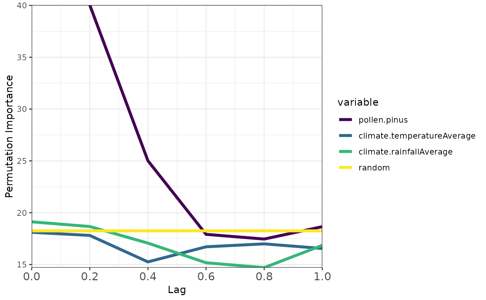

Quantifies ecological memory with Random Forest.
computeMemory.RdTakes the output of prepareLaggedData to fit the following model with Random Forest:
\(p_{t} = p_{t-1} +...+ p_{t-n} + d_{t} + d_{t-1} +...+ d_{t-n} + r\)
where:
\(d\) is a driver (several drivers can be added).
\(t\) is the time of any given value of the response p.
\(t-1\) is the lag number 1 (in time units).
\(p_{t-1} +...+ p_{t-n}\) represents the endogenous component of ecological memory.
\(d_{t-1} +...+ d_{t-n}\) represents the exogenous component of ecological memory.
\(d_{t}\) represents the concurrent effect of the driver over the response.
\(r\) represents a column of random values, used to test the significance of the variable importance scores returned by Random Forest.
Usage
computeMemory(
lagged.data = NULL,
response = NULL,
drivers = NULL,
random.mode = "autocorrelated",
repetitions = 10,
subset.response = "none",
min.node.size = 5,
num.trees = 500,
mtry = NULL,
num.threads = 2
)Arguments
- lagged.data
a lagged dataset resulting from
prepareLaggedData. SeepalaeodataLaggedas example.- response
character string, name of the response variable. Not required if `lagged.data` was generated with [prepareLaggedData]. Default: NULL
- drivers
a character string or vector of character strings with variables to be used as predictors in the model. Not required if `lagged.data` was generated with [prepareLaggedData].. Important:
driversnames must not have the character "__" (double underscore). Default: NULL- random.mode
either "none", "white.noise" or "autocorrelated". See details.
- repetitions
integer, number of random forest models to fit.
- subset.response
character string with values "up", "down" or "none", triggers the subsetting of the input dataset. "up" only models memory on cases where the response's trend is positive, "down" selects cases with negative trends, and "none" selects all cases.
- min.node.size
integer, argument of the ranger function. Minimal number of samples to be allocated in a terminal node. Default is 5.
- num.trees
integer, argument of the ranger function. Number of regression trees to be fitted (size of the forest). Default is 500
- mtry
integer, argument of the ranger function. Number of variables to possibly split at in each node. Default: NULL.
- num.threads
integer, number of cores ranger can use for multithreading. Default: 2
Value
A list with 5 slots:
responsecharacter, response variable name.driverscharacter vector, driver variable names.memorydataframe with six columns:mediannumeric, median importance acrossrepetitionsof the givenvariableaccording to Random Forest.sdnumeric, standard deviation of the importance values of the givenvariableacrossrepetitions.minandmaxnumeric, percentiles 0.05 and 0.95 of importance values of the givenvariableacrossrepetitions.variablecharacter, names of the different variables used to model ecological memory.lagnumeric, time lag values.
R2vector, values of pseudo R-squared value obtained for the Random Forest model fitted on each repetition. Pseudo R-squared is the Pearson correlation between the observed and predicted data.predictiondataframe, with the same columns as the dataframe in the slotmemory, with the median and confidence intervals of the predictions of all random forest models fitted.
Details
This function uses the ranger package to fit Random Forest models. Please, check the help of the ranger function to better understand how Random Forest is parameterized in this package. This function fits the model explained above as many times as defined in the argument repetitions.
To test the statistical significance of the variable importance scores returned by random forest, on each repetition the model is fitted with a different r (random) term, unless random.mode = "none". If random.mode equals "autocorrelated", the random term will have a temporal autocorrelation, and if it equals "white.noise", it will be a pseudo-random sequence of numbers generated with rnorm, with no temporal autocorrelation. The importance of the random sequence in predicting the response is stored for each model run, and used as a benchmark to assess the importance of the other predictors.
Importance values of other predictors that are above the median of the importance of the random term should be interpreted as non-random, and therefore, significant.
References
Wright, M. N. & Ziegler, A. (2017). ranger: A fast implementation of random forests for high dimensional data in C++ and R. J Stat Softw 77:1-17. https://doi.org/10.18637/jss.v077.i01.
Breiman, L. (2001). Random forests. Mach Learn, 45:5-32. https://doi.org/10.1023/A:1010933404324.
Hastie, T., Tibshirani, R., Friedman, J. (2009). The Elements of Statistical Learning. Springer, New York. 2nd edition.
Examples
# \donttest{
#loading data
data(palaeodataLagged)
# Simplified call - response and drivers auto-detected from attributes
memory.output <- computeMemory(
lagged.data = palaeodataLagged,
random.mode = "autocorrelated",
repetitions = 10
)
str(memory.output)
#> List of 5
#> $ response : chr "pollen.pinus"
#> $ drivers : chr [1:2] "climate.temperatureAverage" "climate.rainfallAverage"
#> $ memory :'data.frame': 23 obs. of 6 variables:
#> ..$ median : num [1:23] 40 25 17.9 17.5 18.7 ...
#> ..$ sd : num [1:23] 0.941 0.498 0.631 1.063 1.615 ...
#> ..$ min : num [1:23] 39.6 24.4 17.2 16 16.5 ...
#> ..$ max : num [1:23] 42.1 25.8 18.9 19 21 ...
#> ..$ variable: Factor w/ 4 levels "pollen.pinus",..: 1 1 1 1 1 2 2 2 2 2 ...
#> ..$ lag : num [1:23] 0.2 0.4 0.6 0.8 1 0 0.2 0.4 0.6 0.8 ...
#> $ R2 : num [1:10] 0.991 0.991 0.991 0.991 0.991 ...
#> $ prediction:'data.frame': 3988 obs. of 4 variables:
#> ..$ median: num [1:3988] 3.66 5.02 7.83 11.15 13.86 ...
#> ..$ sd : num [1:3988] 0.212 0.144 0.177 0.234 0.239 ...
#> ..$ min : num [1:3988] 3.35 4.86 7.56 10.86 13.77 ...
#> ..$ max : num [1:3988] 3.95 5.25 8.02 11.51 14.38 ...
str(memory.output$memory)
#> 'data.frame': 23 obs. of 6 variables:
#> $ median : num 40 25 17.9 17.5 18.7 ...
#> $ sd : num 0.941 0.498 0.631 1.063 1.615 ...
#> $ min : num 39.6 24.4 17.2 16 16.5 ...
#> $ max : num 42.1 25.8 18.9 19 21 ...
#> $ variable: Factor w/ 4 levels "pollen.pinus",..: 1 1 1 1 1 2 2 2 2 2 ...
#> $ lag : num 0.2 0.4 0.6 0.8 1 0 0.2 0.4 0.6 0.8 ...
#plotting output
plotMemory(memory.output = memory.output)

# }